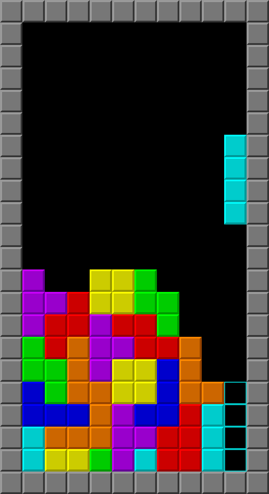
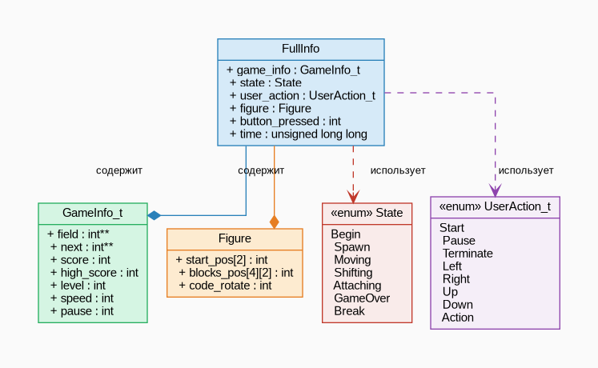
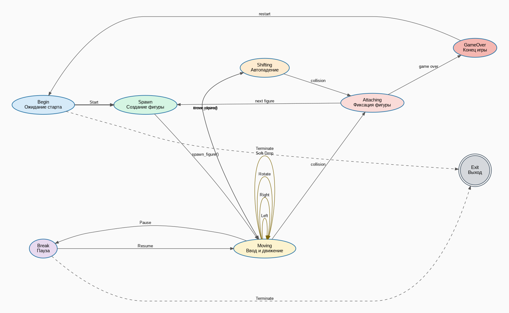
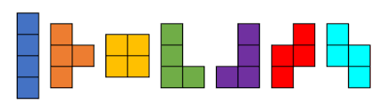

|
BrickGame 1.0
Реализация игры «Тетрис» на языке программирования С.
|
Реализация классической игры «Тетрис» на языке программирования C с использованием терминального интерфейса ncurses и конечного автомата (FSM). Те́трис (производное от «тетрамино» и «теннис») — компьютерная игра, изобретённая и разработанная советским программистом Алексеем Пажитновым. Игра была выпущена в 1985 году — в это время Пажитнов работал в Вычислительном центре Академии наук СССР. by Wikipedia

Центральной структурой является FullInfo, которая содержит в себе GameInfo_t (состояние поля), Figure (текущая фигура), а также использует перечисления State (состояние FSM) и UserAction_t (ввод).
На рисунке ниже показан граф связей между основными структурами и перечислениями проекта.

Проект разделён на три независимых модуля:
Игра управляется конечным автоматом с 7 состояниями:
| Состояние | Описание |
|---|---|
| Begin | Ожидание нажатия кнопки «Старт» |
| Spawn | Создание новой фигуры |
| Moving | Обработка ввода, движение фигуры |
| Shifting | Автоматическое падение фигуры |
| Attaching | Присоединение фигуры к полю |
| GameOver | Конец игры |
| Break | Пауза |

Количество очков зависит от числа одновременно заполненных строк:
| Строк | Очков |
|---|---|
| 1 | 100 |
| 2 | 300 |
| 3 | 700 |
| 4 | 1500 |
Скорость падения фигуры (в миллисекундах) вычисляется по формуле:
\[ t_{fall} = \frac{1000}{level} \]
где \( level \) — текущий уровень игры (от 1 до 10).
Повышение уровня происходит при выполнении условия:
\[ score > level \times 600 \]
Алгоритм вращения фигуры — поворот матрицы N×N на 90° по часовой стрелке:
\[ result[j][N-i-1] = matrix[i][j], \quad i,j \in [0, N) \]
| Клавиша | Действие |
|---|---|
e | Начать игру |
q | Выйти |
← → | Движение |
↓ | Ускорить падение |
Пробел | Повернуть фигуру |
Esc | Пауза / Продолжить |
